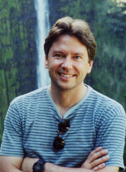

|  | ||
| Douglas Clark, Ph.D. Professor of Chemical Engineering University of California, Berkeley Ph.D. Chemical Engineering, 1983 B.S. Chemistry, 1979 |
||
| Clark(AT)berkeley.edu Office Location: 497 Tan Hall Office Telephone: 642-2408 Office Fax: 643-1228 |
||
| Douglas S. Clark is a Professor of Chemical Engineering at the University of California, Berkeley, as well as an Associate Faculty Scientist in the Applied Science Division of the Lawrence Berkeley Laboratory. He received his B.S. in Chemistry from the University of Vermont in 1979 and his Ph.D. in Chemical Engineering from the California Institute of Technology in 1983. From 1984 to 1986 he was an Assistant Professor of Chemical Engineering at Cornell University. Professor Clark is currently the Editor-in-Chief of Biotechnology and Bioengineering. | ||